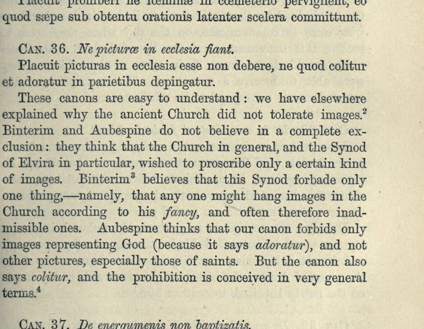

“Ne picturae in ecclesia fiant”
Latin and English: Hefele, History of the Councils, vol. I, p. 151, scan. Highlighted: the words Lecky quotes.

Canon 36. That there be no pictures in church.
It is decided that there must be no pictures in church, lest what is worshipped and adored be painted on the walls.
Original Latin
Can. 36. Ne picturæ in ecclesia fiant.
Placuit picturas in ecclesia esse non debere, ne quod colitur et adoratur in parietibus depingatur.
Hefele’s comment (p. 151):
These canons are easy to understand: we have elsewhere explained why the ancient Church did not tolerate images. Binterim and Aubespine do not believe in a complete exclusion: they think that the Church in general, and the Synod of Elvira in particular, wished to proscribe only a certain kind of images. Binterim believes that this Synod forbade only one thing,—namely, that any one might hang images in the Church according to his fancy, and often therefore inadmissible ones. Aubespine thinks that our canon forbids only images representing God (because it says adoratur), and not other pictures, especially those of saints. But the canon also says colitur, and the prohibition is conceived in very general terms.
Neither of the readings Hefele reports is the one Lecky attributes to “the Catholics” (a measure against pagan profanation in time of persecution); that explanation is not on this page.
Backlinks
Every place in Rationalism in Europe that links to this page (generated automatically when the site is built).
- Chapter III: note 37